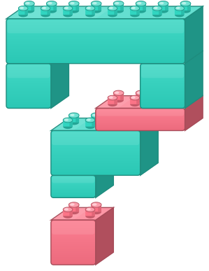

Arma preguntas en inglés pieza por pieza. Respóndelas con las mismas piezas.
💡 O prueba con una de estas:
Elige un modo para practicar:
Devuelve las piezas: escribe la respuesta corta (Yes / No).
Escribe la palabra que falta al principio de la pregunta.
Una conversación se construye entre dos. La pregunta te pasa unas piezas; al responder devuelves esas mismas y agregas la tuya: la que el otro no tenía.
Las piezas que vuelven de la pregunta a la respuesta son: el sujeto (aunque cambie de persona: you → I), el verbo principal , el auxiliar (a veces: en las cerradas siempre, en las abiertas solo si el tiempo es compuesto) y el complemento .
La wh-word no vuelve: nunca aparece en la respuesta. Es la etiqueta del hueco vacío; te dice qué tipo de pieza va ahí: un lugar si preguntó «where», una persona si preguntó «who».
Esa pieza nueva 🆕 es la única que no viene de la pregunta: es tu aporte, lo que tú sabes y el otro no.
Todo tiempo verbal lleva su sello estampado en alguna pieza. La diferencia entre simple y compuesto es en cuál.
En los simples hay una sola pieza y el sello va en ella: work → works, play → played.
Pero en negativo e interrogativo esa pieza no se sostiene sola: hay que pedir prestada una pieza, un auxiliar (do / does / did), y el sello se pasa a ella. Por eso el verbo vuelve a su forma base: did se lleva el pasado, does se lleva la -s. Al responder en positivo devuelves ese auxiliar y el sello vuelve al verbo: When did they arrive? → They arrived…
Los compuestos traen su auxiliar de fábrica y no lo sueltan nunca: está en positivo, negativo e interrogativo. El sello va en esa primera pieza y el verbo se queda en su forma fija: She is sleeping. / She isn't sleeping. / Is she sleeping?
¿Y el verbo to be? Es la pieza que se conecta sola 🎸: no le pide prestado a nadie, pregunta y responde por su cuenta. Is she a doctor? → Yes, she is.
| What | cosas, ideas, acciones | What do you do? |
| Where | lugares | Where do you live? |
| When | tiempo, fechas | When did they arrive? |
| Why | razones (→ because…) | Why are you tired? |
| Who | personas | Who painted the Mona Lisa? |
| Whose | posesión (¿de quién?) | Whose phone is this? |
| Which | opción entre pocas | Which one do you prefer? |
| How | manera, estado | How do you travel to class? |
| How many | cantidad (contable) | How many students came? |
| How much | cantidad (incontable), precio | How much does it cost? |
| How often | frecuencia | How often do you exercise? |
| How long | duración | How long have you studied English? |
| How old | edad | How old is she? |
| What time | hora exacta | What time does the class start? |
Rutinas, hábitos, hechos generales, gustos.
Do you drink coffee every day?
Identidad, estados, descripciones, nacionalidad, profesión.
Is she a doctor?
Lo que pasa ahora mismo; también planes ya agendados.
What are you doing right now?
Acciones terminadas en un momento específico del pasado.
Did she travel to Peru last year?
Estados y descripciones en el pasado.
Were you tired yesterday?
Acción en progreso en el pasado, a menudo interrumpida por otra.
Was he sleeping when you called?
Experiencias de vida (sin fecha específica) y acciones pasadas con efecto en el presente.
Have you ever visited Chiloé?
Lo que pasó antes de otra acción en el pasado.
Had you eaten before the meeting?
Decisiones espontáneas, promesas, predicciones.
Will you come to class tomorrow?
Planes e intenciones ya decididos. El «be» es el auxiliar oficial; «going to» es su ayudante (semi-aux).
What are you going to do this weekend?
Hábitos o estados del pasado que ya no ocurren. En positivo el semi-aux recupera la carga temporal: I used to play football.
Did you use to play football as a child?
Habilidad, permiso, consejos, posibilidad, cortesía. No marcan tiempo por sí solos.
Can you swim?
Cuando la wh-word ES el sujeto, no se usa auxiliar y el verbo va conjugado.
Who painted the Mona Lisa?
Question Lab · © 2026 Víctor Manuel Morales Muñoz · Todos los derechos reservados